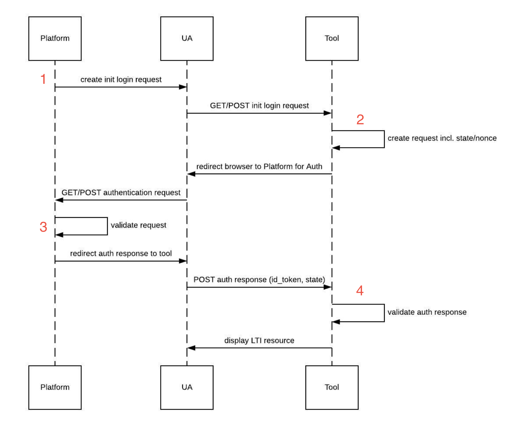

Platform originating LTI messages
How to perform secured platform originating LTI messages launches (platform -> tool), complying to the OIDC launch flow.
OIDC flow
Platform originating messages must comply to the OpenId Connect launch flow.
You can find below an OIDC launch flow diagram, with steps numbers:

To handle the OIDC launch flow for platform originating messages, each step will be detailed below, from both platform and tool perspectives.
1 - Platform side: launch generation
You can find below required steps to generate a platform originating message, needed only if you're acting as a platform.
Create the message
As a platform, you can create a platform originating message for a tool within the context of a registration.
To do so, you can use the PlatformOriginatingLaunchBuilder:
<?php
use OAT\Library\Lti1p3Core\Message\Launch\Builder\PlatformOriginatingLaunchBuilder;
use OAT\Library\Lti1p3Core\Message\LtiMessageInterface;
use OAT\Library\Lti1p3Core\Message\Payload\Claim\ContextClaim;
use OAT\Library\Lti1p3Core\Registration\RegistrationRepositoryInterface;
// Create a builder instance
$builder = new PlatformOriginatingLaunchBuilder();
// Get related registration of the launch
/** @var RegistrationRepositoryInterface $registrationRepository */
$registration = $registrationRepository->find(...);
// Build a launch message
$message = $builder->buildPlatformOriginatingLaunch(
$registration, // related registration
LtiMessageInterface::LTI_MESSAGE_TYPE_RESOURCE_LINK_REQUEST, // message type of the launch, as an example: 'LtiDeepLinkingResponse'
'http://tool.com/launch', // target link uri of the launch (final destination after OIDC flow)
'loginHint', // login hint that will be used afterwards by the platform to perform authentication
null, // will use the registration default deployment id, but you can pass a specific one
[
'http://purl.imsglobal.org/vocab/lis/v2/membership#Learner' // role
],
[
'myCustomClaim' => 'myCustomValue', // custom claim
new ContextClaim('contextIdentifier') // LTI claim representing the context of the launch
]
);
ContextClaim class, any claim that implement the MessagePayloadClaimInterface will be automatically normalized and added to the message payload claims.
Launch the message
As a result of the build, you get a LtiMessageInterface instance that has to be used in the following ways:
<?php
use OAT\Library\Lti1p3Core\Message\LtiMessageInterface;
/** @var LtiMessageInterface $message */
// Main message properties you can use as you want to offer the launch to the platform users
echo $message->getUrl(); // url of the launch
echo $message->getParameters()->all(); // array of parameters of the launch
// Or use those helpers methods to ease the launch interactions
echo $message->toUrl(); // url with launch parameters as query parameters
echo $message->toHtmlLink('click me'); // HTML link, where href is the output url
echo $message->toHtmlRedirectForm(); // HTML hidden form, with possibility of auto redirection
Launching an LTI Resource Link
This library also allow you to perform easily launches of an LTI Resource Link.
This becomes handy when a platform owns an LTI Resource Link to a tool resource (previously fetched with DeepLinking for example).
First of all, you need to create or retrieve an LtiResourceLink instance:
<?php
use OAT\Library\Lti1p3Core\Resource\LtiResourceLink\LtiResourceLink;
$ltiResourceLink = new LtiResourceLink(
'resourceLinkIdentifier',
[
'url' => 'http://tool.com/resource',
'title' => 'Some title'
]
);
Once your LtiResourceLinkInterface implementation is ready, you can use the LtiResourceLinkLaunchRequestBuilder to create an LTI Resource Link launch:
<?php
use OAT\Library\Lti1p3Core\Message\Launch\Builder\LtiResourceLinkLaunchRequestBuilder;
use OAT\Library\Lti1p3Core\Message\Payload\Claim\ContextClaim;
use OAT\Library\Lti1p3Core\Registration\RegistrationRepositoryInterface;
// Create a builder instance
$builder = new LtiResourceLinkLaunchRequestBuilder();
// Get related registration of the launch
/** @var RegistrationRepositoryInterface $registrationRepository */
$registration = $registrationRepository->find(...);
// Build a launch message
$message = $builder->buildLtiResourceLinkLaunchRequest(
$ltiResourceLink, // LTI resource link to launch
$registration, // related registration
'loginHint', // hint about the user login process that will be done on a later step
null, // will use the registration default deployment id, but you can pass a specific one
[
'http://purl.imsglobal.org/vocab/lis/v2/membership#Learner' // role
],
[
new ContextClaim('contextId'), // LTI claim representing the context
'myCustomClaim' => 'myCustomValue' // custom claim
]
);
As it also returns an LtiMessageInterface instance, you can then use the generated message to launch it as explained previously.
2 - Tool side: OIDC initiation
You can find below required steps to handle the initiation an OIDC flow, needed only if you're acting as a tool.
Handling the OIDC initiation
As a tool, you'll receive an HTTP request containing the OIDC initiation, generated by the platform originating messages builders.
You can use the OidcInitiator to handle this:
- it requires a registration repository implementation as explained here
- it expects a PSR7 ServerRequestInterface to handle
- it will output a LtiMessageInterface instance to be sent back to the platform.
For example:
<?php
use OAT\Library\Lti1p3Core\Registration\RegistrationRepositoryInterface;
use OAT\Library\Lti1p3Core\Security\Oidc\OidcInitiator;
use Psr\Http\Message\ServerRequestInterface;
/** @var RegistrationRepositoryInterface $registrationRepository */
$registrationRepository = ...
/** @var ServerRequestInterface $request */
$request = ...
// Create the OIDC initiator
$initiator = new OidcInitiator($registrationRepository);
// Perform the OIDC initiation (including state generation)
$message = $initiator->initiate($request);
// Redirection to the platform
header('Location: ' . $message->toUrl(), true, 302);
die;
OIDC initiation redirection automation
This library provides the OidcInitiationRequestHandler, implementing the PSR15 RequestHandlerInterface, that can be exposed in an application controller to automate a redirect response creation from the OidcInitiator output:
- it expects a PSR7 ServerRequestInterface to handle
- it will return a PSR7 ResponseInterface instance to make the redirection to the platform.
For example:
<?php
use OAT\Library\Lti1p3Core\Registration\RegistrationRepositoryInterface;
use OAT\Library\Lti1p3Core\Security\Oidc\OidcInitiator;
use OAT\Library\Lti1p3Core\Security\Oidc\Server\OidcInitiationRequestHandler;
use Psr\Http\Message\ServerRequestInterface;
/** @var RegistrationRepositoryInterface $registrationRepository */
$registrationRepository = ...
/** @var ServerRequestInterface $request */
$request = ...
// Create the OIDC initiation handler
$handler = new OidcInitiationRequestHandler(new OidcInitiator($registrationRepository));
// Redirect response from OIDC initiation (including state & nonce generation, via 302)
$response = $handler->handle($request);
3 - Platform side: OIDC authentication
You can find below required steps to provide authentication during the OIDC flow, needed only if you're acting as a platform.
Perform the OIDC authentication and redirecting to the tool
After the redirection of the tool to the platform, the platform need to provide authentication and redirect to the tool to continue the OIDC flow.
It can be handled with the OidcAuthenticator:
- it requires a registration repository and a UserAuthenticatorInterface implementation as explained here
- it expects a PSR7 ServerRequestInterface to handle
- it will output a LtiMessageInterface that can be used to redirect to the tool to finish the OIDC flow.
You have to specify how to provide platform authentication, for example:
<?php
use OAT\Library\Lti1p3Core\Registration\RegistrationInterface;
use OAT\Library\Lti1p3Core\Security\User\UserAuthenticatorInterface;
use OAT\Library\Lti1p3Core\Security\User\Result\UserAuthenticationResult;
use OAT\Library\Lti1p3Core\Security\User\Result\UserAuthenticationResultInterface;
use OAT\Library\Lti1p3Core\User\UserIdentity;
$userAuthenticator = new class implements UserAuthenticatorInterface
{
public function authenticate(
RegistrationInterface $registration,
string $loginHint
): UserAuthenticationResultInterface {
// Perform user authentication based on the registration, request or login hint
// (ex: owned session, LDAP, external auth service, etc)
...
return new UserAuthenticationResult(
true, // success
new UserIdentity('userIdentifier', 'userName') // authenticated user identity
);
}
};
To then use it to continue OIDC fow:
<?php
use OAT\Library\Lti1p3Core\Registration\RegistrationRepositoryInterface;
use OAT\Library\Lti1p3Core\Security\Oidc\OidcAuthenticator;
use OAT\Library\Lti1p3Core\Security\User\UserAuthenticatorInterface;
use Psr\Http\Message\ServerRequestInterface;
/** @var RegistrationRepositoryInterface $registrationRepository */
$registrationRepository = ...
/** @var UserAuthenticatorInterface $userAuthenticator */
$userAuthenticator = ...
/** @var ServerRequestInterface $request */
$request = ...
// Create the OIDC authenticator
$authenticator = new OidcAuthenticator($registrationRepository, $userAuthenticator);
// Perform the login authentication (delegating to the $userAuthenticator with the hint 'loginHint')
$message = $authenticator->authenticate($request);
// Auto redirection to the tool via the user's browser
echo $message->toHtmlRedirectForm();
OIDC authentication redirection automation
This library provides the OidcAuthenticationRequestHandler, implementing the PSR15 RequestHandlerInterface, that can be exposed in an application controller to automate a redirect form response creation from the OidcAuthenticator output:
- it expects a PSR7 ServerRequestInterface to handle
- it will return a PSR7 ResponseInterface instance to make the redirection to the tool via a form POST.
For example:
<?php
use OAT\Library\Lti1p3Core\Registration\RegistrationRepositoryInterface;
use OAT\Library\Lti1p3Core\Security\Oidc\OidcAuthenticator;
use OAT\Library\Lti1p3Core\Security\Oidc\Server\OidcAuthenticationRequestHandler;
use OAT\Library\Lti1p3Core\Security\User\UserAuthenticatorInterface;
use Psr\Http\Message\ServerRequestInterface;
/** @var RegistrationRepositoryInterface $registrationRepository */
$registrationRepository = ...
/** @var UserAuthenticatorInterface $userAuthenticator */
$userAuthenticator = ...
/** @var ServerRequestInterface $request */
$request = ...
// Create the OIDC authentication handler
$handler = new OidcAuthenticationRequestHandler(new OidcAuthenticator($registrationRepository, $userAuthenticator));
// Redirect response from OIDC authentication (via form POST)
$response = $handler->handle($request);
4 - Tool side: launch validation
You can find below required steps to validate a platform originating message launch after OIDC flow, needed only if you're acting as a tool.
Validate the launch
As a tool, you'll receive an HTTP request containing the launch message after OIDC flow completion.
The ToolLaunchValidator can be used for this:
- it requires a registration repository and a nonce repository implementations as explained here
- it expects a PSR7 ServerRequestInterface to validate
- it will output a LaunchValidationResultInterface representing the launch validation, the related registration and the message payload itself.
For example:
<?php
use OAT\Library\Lti1p3Core\Message\Launch\Validator\Tool\ToolLaunchValidator;
use OAT\Library\Lti1p3Core\Registration\RegistrationRepositoryInterface;
use OAT\Library\Lti1p3Core\Security\Nonce\NonceRepositoryInterface;
use Psr\Http\Message\ServerRequestInterface;
/** @var RegistrationRepositoryInterface $registrationRepository */
$registrationRepository = ...
/** @var NonceRepositoryInterface $nonceRepository */
$nonceRepository = ...
/** @var ServerRequestInterface $request */
$request = ...
// Create the validator
$validator = new ToolLaunchValidator($registrationRepository, $nonceRepository);
// Perform validation
$result = $validator->validatePlatformOriginatingLaunch($request);
// Result exploitation
if (!$result->hasError()) {
// You have access to related registration (to spare queries)
echo $result->getRegistration()->getIdentifier();
// And to the LTI message payload (id_token parameter)
echo $result->getPayload()->getVersion(); // '1.3.0'
echo $result->getPayload()->getContext()->getIdentifier(); // 'contextIdentifier'
echo $result->getPayload()->getClaim('myCustomClaim'); // 'myCustomValue'
echo $result->getPayload()->getUserIdentity()->getName(); // 'userName', see platform during OIDC authentication
// If needed, you can also access the OIDC state (state parameter)
echo $result->getState()->getToken()->toString(); // state JWT
echo $result->getState()->getToken()->getClaims()->get('jti'); // state JWT id
// If needed, you can also access the validation successes
foreach ($result->getSuccesses() as $success) {
echo $success;
}
}
Note: if you want to work with the message payload claims as array of values (for caching purposes for example), you can use the MessagePayloadClaimsExtractor for extracting claims (provides a configurable claim sanitization).
Working with launch roles
The LtiMessagePayloadInterface provides the getValidatedRoleCollection() getter to allow you to work easily with the LTI specification roles as a RoleCollection.
You can base yourself on this collection if you need to perform RBAC on tool side, for example:
<?php
use OAT\Library\Lti1p3Core\Message\Launch\Validator\Result\LaunchValidationResult;
use OAT\Library\Lti1p3Core\Role\RoleInterface;
/** @var LaunchValidationResult $result */
$result = $validator->validatePlatformOriginatingLaunch(...);
// Result exploitation
if (!$result->hasError()) {
// Access the validated role collection
$roles = $result->getPayload()->getValidatedRoleCollection();
// Check if a role of type context (core or not) has been provided (our case for http://purl.imsglobal.org/vocab/lis/v2/membership#Learner)
if ($roles->canFindBy(RoleInterface::TYPE_CONTEXT)) {
// Authorized launch
...
} else {
// Unauthorized launch
...
}
}
Notes:
- if the launch contains invalid (non respecting LTI specification) roles, the getter will throw an LtiException
- the LtiMessagePayloadInterface offers the
getRoles()getter to work with plain roles values (no validation)